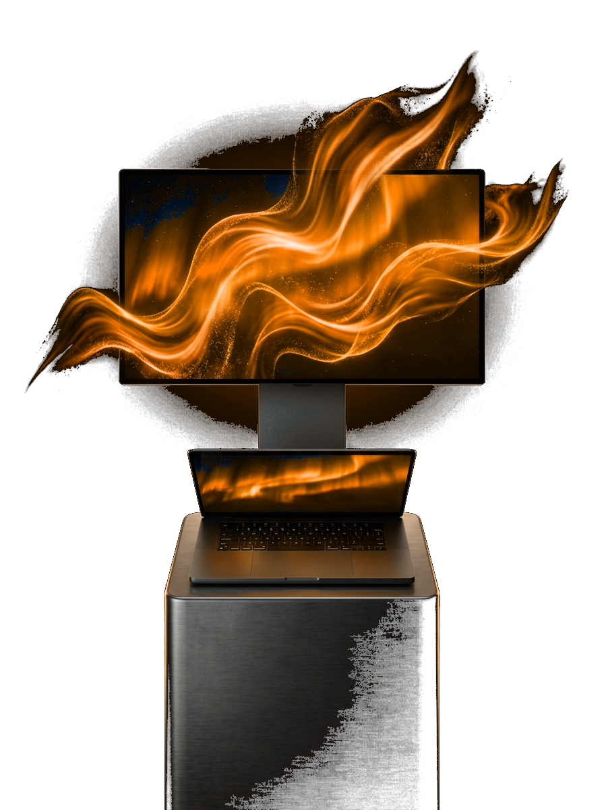

Breathe 4K Motion
Bring any custom 4K 60/240fps animation or video to your macOS Desktop, Screen Saver, and native Lock Screen — zero paywalls forever.
"Zero Dock clutter, <1% CPU hardware HEVC decoding, and real Lock Screen motion via idleassetsd injection with 1-click backup restore."

4K Desktop Layer
Plays behind desktop icons across all monitors & Spaces.
Our Trendy Surfaces

For Native macOS Lock Screen Motion
AuraDesk automatically remuxes any 4K .mp4 or .mov video without re-encoding, backs up Apple's original Aerial asset, updates Index.plist, and injects your video into idleassetsd for genuine Lock Screen playback.
For 4K 240fps Screen Saver & Clock
Includes both native macOS Aerial Screen Saver synchronization and an instant built-in fullscreen 4K Screen Saver overlay complete with the Sonoma-style date & time clock and configurable idle timer.